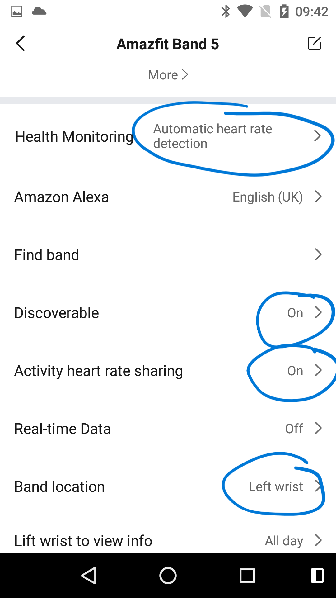
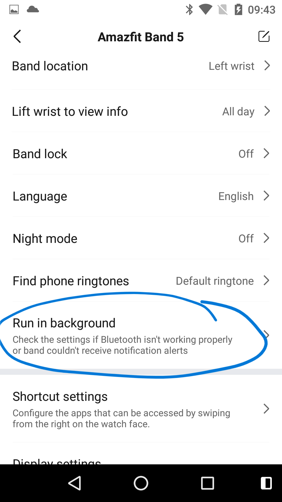
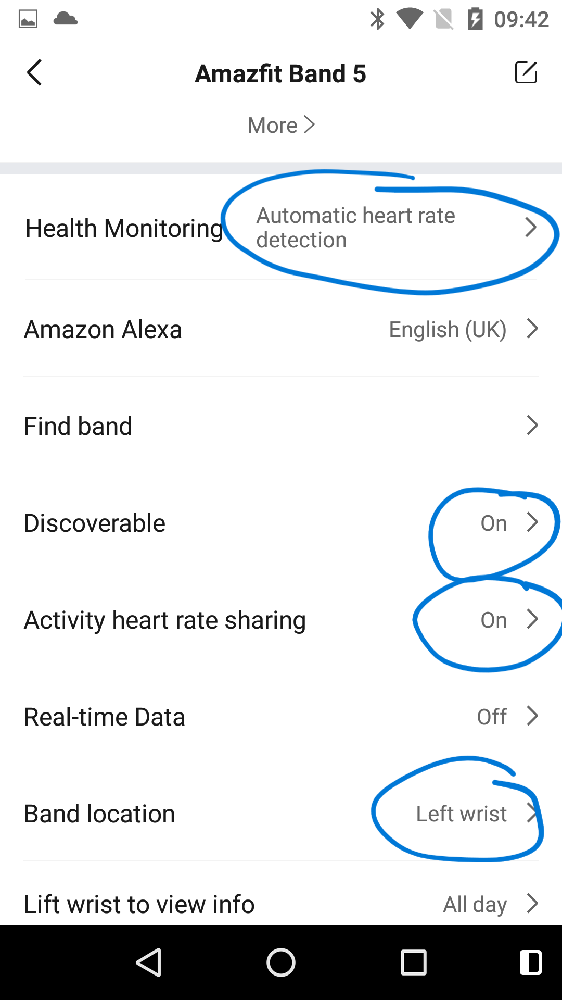
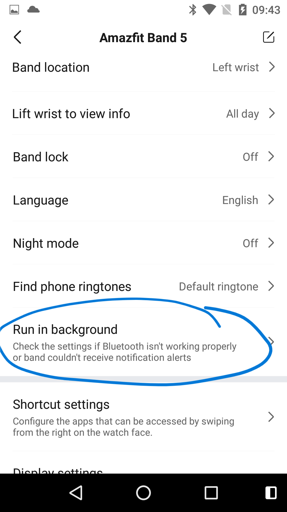
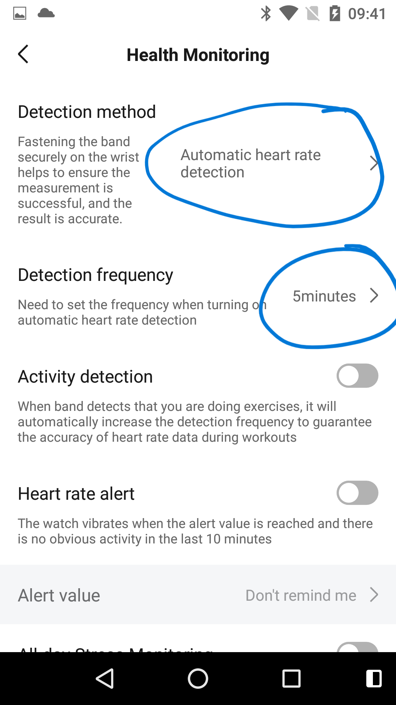
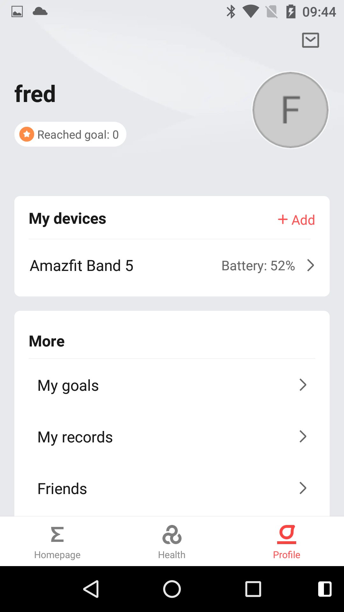
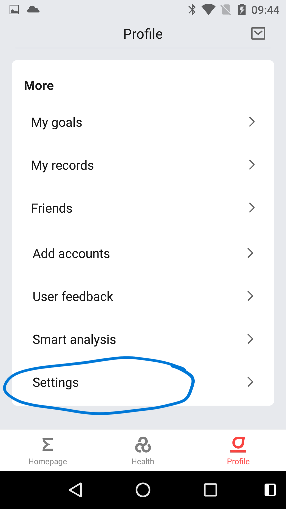
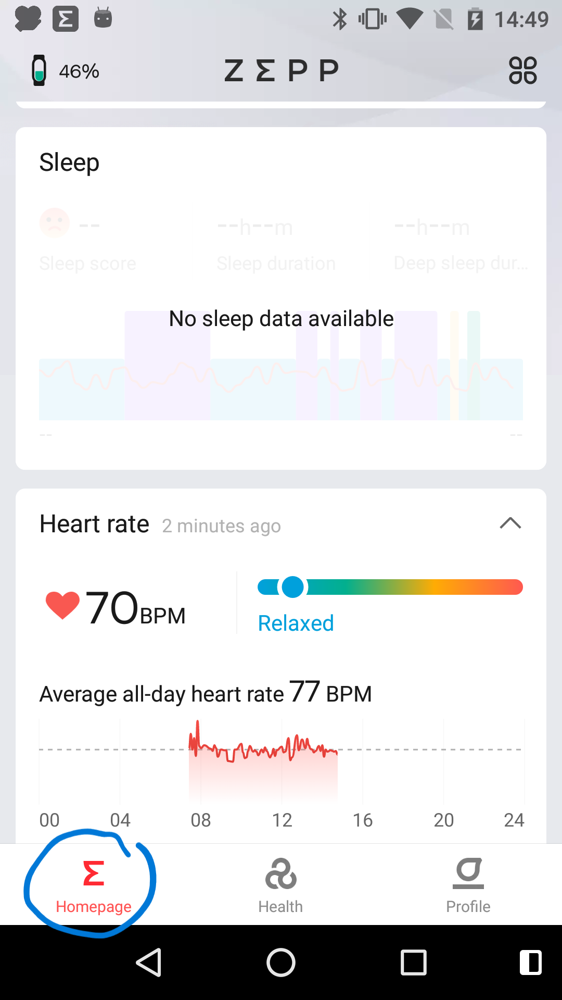

1. Once installed, click Open.

2. You need to log into the Zepp system. You can sign in with an account you may already have ("Sign in with a third-party account") or just create a random email address and password ("Create an account now"). With the latter, you will reach the "Sign up" page. The email address isn't checked that it exists but if you ever want to move the AmazFit settings to a different device, make sure you remember the address and password. When completing this page, don't miss the country selection at the top of the page, depending on the size of your phone's display, it may have scrolled off the top.


3. Enter the requested information. Cyfer Health doesn't use (or have access to) any of this information but if you want to use the functions of the Zepp app, it is best to enter correct information.

4. You may need to approve a few permission requests during the following steps.

5. The next stage is to pair (i.e. connect) the band to your phone. Tap "Profile", "Add device" and "Band". (Make sure the band is close to your phone.) Now Zepp will try to find your band. If it is successful, the band will vibrate and you will need to click the band to confirm that you wish to pair it. (You might need your glasses for this bit because the message on the band is very small.)


6. You may find that the band's software needs to be updated. Keep the band close to your phone and wait until the update has finished.

7. You should now see the following screen with various settings. Scroll down until you can see the ringed settings and change the settings to match the ringed values. For Band location, select the wrist where the band will be worn. Note the 'Run in background' button. Tapping it will provide phone specific guidance on configuring the phone to allow Zepp to run continuously. The guidance might be quite technical but, if possible, try to follow it. If you can't follow it, you may find that Zepp (and hence Cyfer Health) may stop working after a few hours or days. Restarting Zepp will get things working again but will likely stop again after another few hours/days.
 



To change the Health Monitoring setting, you need to tap it and then you will be taken to the Health Monitoring settings page. The "5 minutes" setting can also be set to "1 minute". A value of "1 minute" will increase the update frequency recorded by the Zepp app but will not change the Cyfer Health's update frequency. Using '1 minute' will also have an impact on the battery life.
Now, go back until you reach the following screen. Scroll down and tap Settings. Turn on the ringed setting.
 
Zepp should now be configured to work with Cyfer Health Client. However, make sure Zepp is reading the heart rate from the band by clicking on Zepp's Homepage tab. You may need to scroll down to find the heart rate card. (Make sure someone is wearing the band! If they have just put on the band, it may take a few minutes for the first reading to be shown.)
Now you can configure the Cyfer Health Client app.